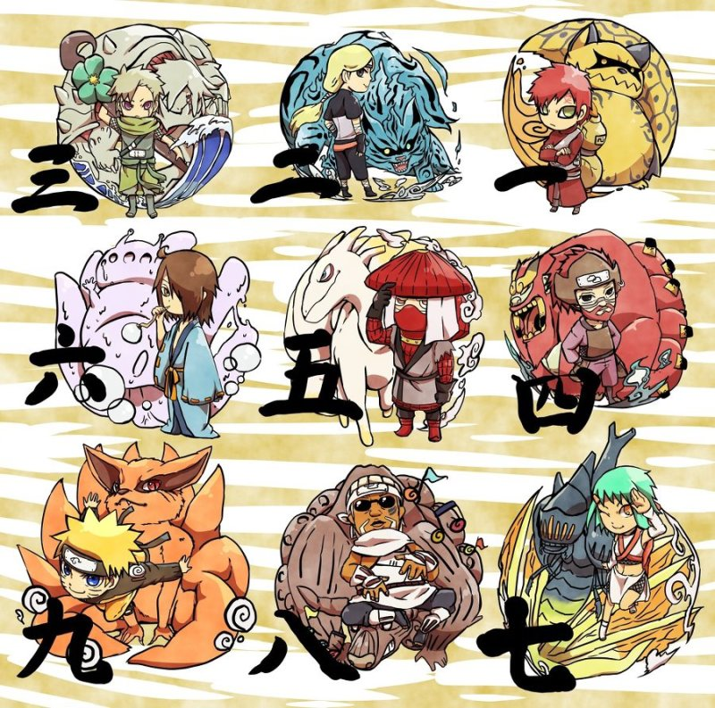

尾獸
尾獸是《火影忍者》中的妖獸，共有九隻，牠們依次有不同的尾巴數量及不同的査克拉性質，皆擁有巨大的力量，因而對人們造成威脅，故各自被封印在人體內，作為容器之人稱為「祭品之力」但，是木遁能夠壓制住尾獸的力量，有些尾獸還會受限於某些特定的力量（如：第四代風影能以磁遁操控砂金抑制一尾守鶴。動畫版少年幽鬼丸也能用他的特殊能力控制三尾）。 每隻尾獸都有由六道仙人取的名字

一尾
守鶴（いちび しゅかく）

所屬忍者村：砂隱
封印術：不明
能力：磁遁、風遁
特徵：擁有一條大尾巴的貍貓，體色為土黃色，身上有代表風神圖案的紫羅蘭色紋身。
祭品之力：分福→加琉羅→我愛羅
二尾
又旅（にび またたび）

所屬忍者村：雲隱
封印術：不明
能力：火遁
特徵：擁有兩條尾巴，全身如同燃燒著藍色火焰的藍色妖貓，耳朵大而尖，右眼是黃、左眼是青，牙齒為雙面鋸齒型，全身如同燃燒著藍色火焰
構想源自於日本妖怪神話二尾貓又的傳說，據說在日本，貓要是活過100年以上，尾巴將分裂為兩條，化作妖怪。
祭品之力：二位柚木斗
三尾
磯撫（さんび いそぶ）

所屬忍者村：霧隱
封印術：不明
能力：水遁
特徵：擁有三條螯蝦狀尾巴的灰色烏龜，漫畫中出場時祭品之力就已不復存在，以野生的狀態生活在湖泊底處。
磯撫是日本妖怪傳說中，外表如同巨大怪魚的妖怪。
祭品之力：野原凜→「第四代水影」櫓
四尾
孫悟空（よんび そんごくう）

所屬忍者村：岩隱
封印術：不明
能力：熔遁
擁有四條恐龍狀尾巴的紅毛猿猴，強壯的身軀儲存溶解一切的炙熱岩漿，額頭上冠之角有像孫悟空的金剛環。
四尾的本名是仙猴王-孫悟空（孫）。
祭品之力：老紫
祭品之力：老紫
五尾
穆王（ごび こくおう）

所屬忍者村：岩隱
封印術：不明
能力：蒸氣、沸遁
特徵：擁有五條純白尾巴，海豚的頭和馬的身體合成的白色巨獸。
祭品之力：藩
六尾
犀犬（ろくび さいけん）

所屬忍者村：霧隱
封印術：不明
能力：溶遁
特徵：擁有六條乳白色尾巴的活蝓尾獸。
祭品之力：泡沫
七尾
重明（ななび ちょうめい）

所屬忍者村：瀧隱
封印術：不明
能力：飛行、鱗粉隱身
特徵：擁有七條尾巴中的六隻翅膀和一條尾的甲蟲，上半身有藍色鎧甲，下半身是綠色腹部，自稱「幸運七號」。九尾的回憶片段中，七尾曾是一隻幼蟲，經過時間成長後才變成目前的樣子
祭品之力：楓
八尾
牛鬼（はちび ぎゅうき）

所屬忍者村：雲隱
封印術：鐵甲封印
能力：雷遁、封印術-億怒端數煩流奴
特徵：身後為八條章魚腳尾巴的紅色蠻牛怪物，腦袋上左右各有兩隻角，其中左邊的犄角是過去與三代雷影對決後被切斷的（然而斷裂的尾巴卻會恢復）。
祭品之力：四代雷影的父親和叔叔→Blue B/深→殺人蜂
九尾
九喇嘛（きゅうび クラマ）

所屬忍者村：木葉
封印術：八卦封印（兩個四象封印所形成的偶數封印）→六道封印
能力：感知周遭的善意以及惡意 以及査克拉身體活性化（瞬身之術）
特徵：擁有九條尾巴的妖怪狐狸。
祭品之力：漩渦彌托→漩渦九品→漩渦鳴人
十尾
別稱：天目一箇神、踏被、大太法師

能力：所有尾獸之力
封印術：六道封印
特徵：十尾的真面目為神樹，之後被大筒木輝夜用自己的意志創造出十尾，是査克拉的起源，擁有十條尾巴，單眼，眼睛花紋類似寫輪眼和輪迴眼組合而成，發射的「尾獸玉」威力都比其他尾獸強勁。
祭品之力：大筒木輝夜→六道仙人→宇智波帶土→宇智波斑→大筒木輝夜